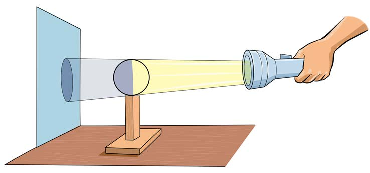

Jaribio namba 7: Kuchunguza kivuli kinavyotokea
Lengo:
Kuonesha kivuli kinavyotokea
Mahitaji:
Mpira, kurunzi, kikombe, kiti, mwanga wa jua kifaa cha kutegemeza kama stuli na meza
Hatua
1.
Shika mkononi kikombe au kitabu kuelekea kwenye mwanga wa jua.
Je, umeona au umehisi nini?
2.
Weka meza na kiti nje ya darasa kwenye mwanga wa jua.
3.
Angalia au gusa chini ya meza na kiti.
Je, unaona au unahisi nini?
4.
Ingia kwenye chumba chenye giza.
Weka mpira juu ya egemeo, kisha washa kurunzi ukielekeza kwenye mpira kama ilivyooneshwa katika Kielelezo namba 9.
Je, unaona au unahisi nini?
5.
Andika matokeo ya unachokiona au unachokihisi katika hatua ya 1, 3 na 4.

Maelezo ya picha: Tochi inamulika mpira, na kivuli cha mpira kinaonekana kwenye ukuta. Picha inaonyesha jinsi mwanga unavyotengeneza kivuli.
Kielelezo namba 9: namna mwanga unavyotengeneza kivuli.
Tochi iliyowaka kuelekea kwenye mpira na kivuli kutoka ukutani